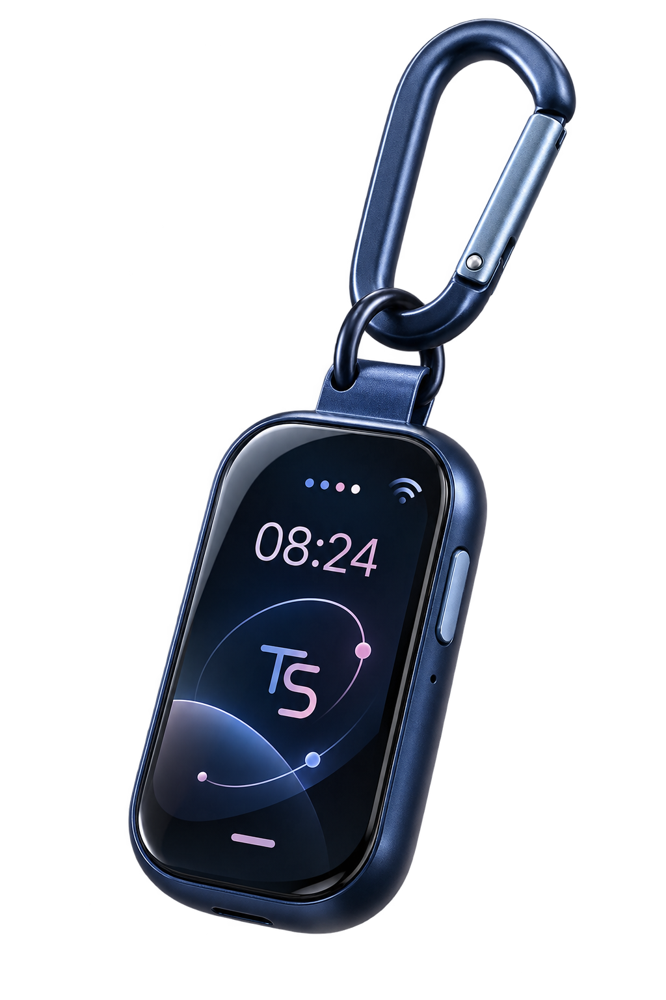
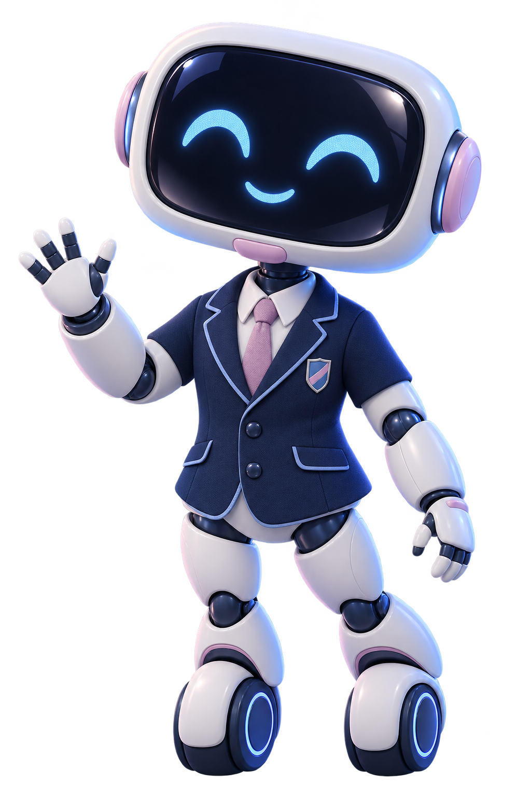

AGOSTO✓
3 actividades
Control y organización
Horarios, indicadores y procesos reunidos en una experiencia más simple.
Tecnología que conecta, organiza y transforma.
Una pequeña tecnología pensada para acompañar a cada estudiante y contribuir a una escuela más conectada, organizada e inteligente.
Creado por estudiantes
Escuela de Talentos del Callao


EL DISPOSITIVO
Un smartwatch convertido en llavero inteligente: compacto, cómodo y pensado para acompañarte todos los días.
CONCEPTO DE PROTOTIPO · EN DESARROLLO01 — EL PROYECTO
Talent Smart es un dispositivo portátil pensado para facilitar procesos y conectar a toda nuestra comunidad educativa.
Horarios, indicadores y procesos reunidos en una experiencia más simple.
Talent Smart asociado a un perfil digital con proximidad como posibilidad técnica.
Una red digital que conecta institución, estudiantes y familias.
Robot, dispositivo e interfaz creados desde la escuela para nuestra comunidad.
TECNOLOGÍA DETRÁS DEL PROYECTO
Estas tecnologías forman parte de la investigación y propuesta del prototipo; no representan todavía funciones finales.
Exploración de identificación y lectura por proximidad.
Un perfil vinculado a cada estudiante.
Un formato compacto para llevar a diario.
Información escolar organizada en una interfaz.
Conexión segura de personas y procesos.
02 — CÓMO FUNCIONA
Una experiencia intuitiva, segura y pensada para estudiantes.
Accede con tu correo institucional mediante autenticación segura.
Asocia el dispositivo con tu perfil institucional.
Lleva tu Talent Smart contigo durante tu día escolar.
Accede a las funciones disponibles del sistema.
03 — NUESTRA MISIÓN
“Buscamos transformar la experiencia educativa mediante soluciones tecnológicas que permitan conectar mejor a nuestra comunidad.”— EQUIPO TALENT SMART
Organizar, facilitar y conectar de una manera más eficiente.
04 — EL EQUIPO
El equipo detrás de Talent Smart. Roles y fotografías podrán actualizarse conforme avance el proyecto.
¿LISTO PARA CONECTAR?